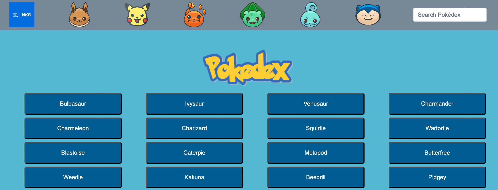
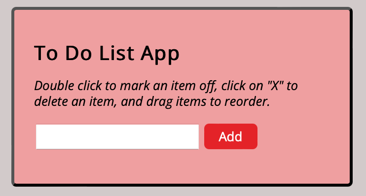
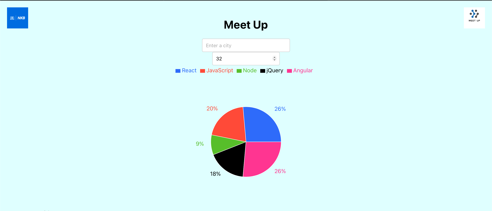
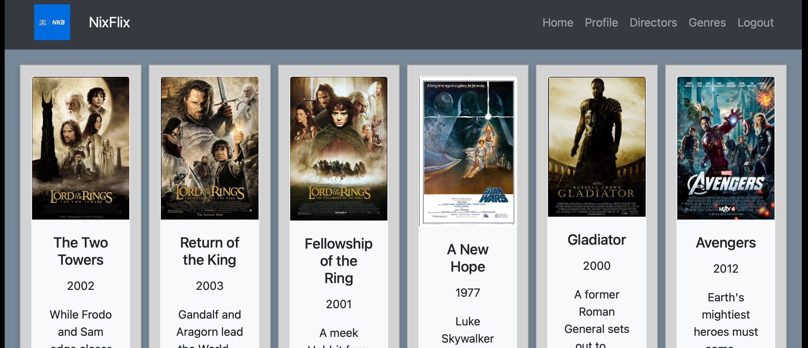
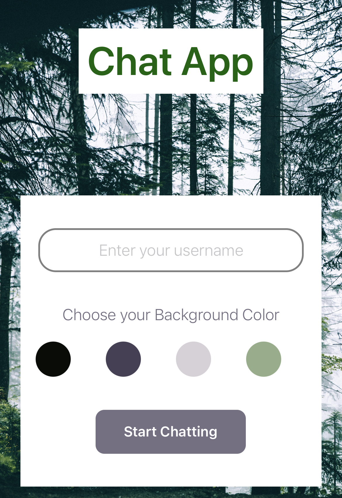

A small web application with HTML, CSS, and JavaScript that loads
data from an external API and enables the viewing of data points in
detail.
-
Users are able to view a list of data and see more details for a
given data item on demand.
-
The purpose of the project is to build a complete, fully
functioning JavaScript web application.
- This app is relying on an external data source.
-
The app not only works, but is also aesthetically pleasing and
easy to use.
-
The project aims to showcase my ability to create the architecture
of a JavaScript app, as well as how I test and debug my code.
See it here
The code..

This is a small web application made using jQuery.
- The user can add a new item to a list of items.
- The user can cross out an item from the list of items.
- The user can delete an item from the list of items.
-
The user can change the order of items in the list of items.
See it here
The code..

I built this app as part of a Web Development course with
CareerFoundry. It really helped me to better understand React, Test
Driven Development, serverless functions, and OAuth2 authentication.
-
Developed a progressive web app (PWA) utilizing serverless
architecture and TDD approach
-
Implemented features such as offline support, push notifications,
and "add to home screen" prompt
-
Utilized data visualization techniques to display event data in
the form of charts and graphs
-
Incorporated serverless functions hosted by a cloud provider for
efficient scaling
-
Utilized TDD approach to ensure high-quality code and adequate
test coverage
-
Improved user experience and performance through implementation of
PWA features
See it here
The code..
Server side code is A RESTful API coded from scratch using Node.js.
-
I built the server-side component of a "movies" web application
that provides users with access to information about different
movies, directors, and genres.
-
Users are able to sign up, update their personal information, and
create a list of their favorite movies.
-
The project demonstrates mastery of full-stack JavaScript
development, including APIs, web server frameworks, databases,
business logic, authentication, data security, and more.
-
I implemented a REST API that interacts with a database that
stores data about different movies using the MERN (MongoDB,
Express, React, and Node.js) stack.
-
The application is hosted online and is responsive, providing the
same user experience on any device.
-
Movie enthusiasts have access to information about different
movies, directors, and genres and be able to save data about their
favorite movies.
The code..

A client-side frontend for a RESTful API, built with React.
-
I used React to build the client-side for an app called NixFlix
based on its existing server-side code (REST API and database).
-
I created the interface for the NixFlix app that users can use to
make requests to and receive responses from the server-side.
-
It considers the readability and maintenance of the codebase, and
the design and usability of the app.
-
A complete web app that demonstrates mastery of full-stack
JavaScript development using the MERN (MongoDB, Express, React,
and Node.js) stack.
-
The app will be hosted online, be responsive and can be used
anywhere and on any device, giving all users the same experience.
-
Movie enthusiasts will have access to information about different
movies, be able to save a list of their favorite movies and access
it whenever they want to.
In progress..
The code..

A JavaScript chat app built with ReactNative, featuring advanced
functionality such as offline storage or geolocation.
-
I built a chat app for mobile devices using React Native that
provides users with a chat interface and options to share images
and their location.
-
I used React Native, Expo, and Google Firestore Database to build
a chat app that can be added to a portfolio to demonstrate
knowledge of JavaScript mobile development.
-
The app is optimized for both Android and iOS devices and can be
used by other developers working on the product.
-
The app features a page where users can enter their name and
choose a background color for the chat screen before joining the
chat, a page displaying the conversation, input field and submit
button, and options to send images and location data.
-
Data will be stored online and offline and the app will
authenticate users anonymously via Google Firebase authentication.
-
The chat interface and functionality was created using the Gifted
Chat library and the app's codebase will contain comments.
In Progress..